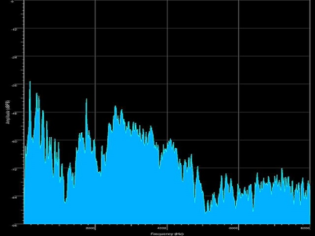

'Synthetic Words' dataset

The 'synthetic-words' dataset contains audio files that reproduce the pronunciation of 20 English words got using synthetic voices available on the Mac via the command say.
The audio files are in wav format and are sampled at 22050 Hz mono; for each word there are 325 wav files obtained with 25 different voices performed at different speeds.
The files are collected in two tar.gz archives (10 words for each archive) freely downloadable; the repository also contains a script to unzip them and a script
if you want to regenerate (on a Mac) the dataset, and you are allowed to change the words, voices and speeds.
The challenge will be to train a neural network on this dataset of synthetic voices and then test it to recognize the same words spoken by natural voices.
Download of the dataset
The dataset and the script for Mac to regenerate it are available on GitHub.
These materials are distributed under MIT license; feel free to use, share, fork and adapt these materials as you see fit.
Also please feel free to submit pull-requests and bug-reports to this GitHub repository or contact me on my social media channels available on the top right corner of this page.